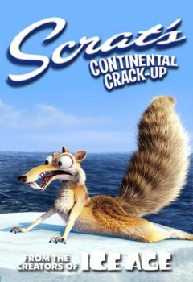

Scrat's Continental Crack-Up (2010)



Also known as:A Crise Continental de Scrat
Country:United States, 3 minutes
Spoken languages:
Genres:Animation, Short, Comedy, Family, Fantasy
Director(s):Steve Martino, Michael Thurmeier
Writer(s):Michael Berg, Mike Reiss
Video Codec:Unknown
Number: 3322
Tomatometer:

--

--
IMDb Rating:


7.5/10 (3.1K votes)
Certification:
Storyline:
Scrat's pursuit of his acorn causes the earth's land to split into different continents.
Cast:
Chris Wedge (voice of Scrat), Simon Pegg (voice of Buck), Jason Fricchione (as Announcer)
Medium: Digital Copy,
Location: Plex D
Loaned: No
Aspect ratio: Unknown